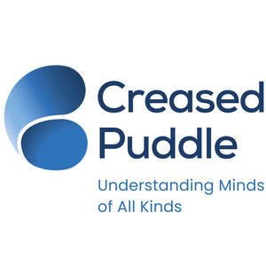

Trade Mark Journal No.2025/050 12 December 2025
UK00004296072 17 November 2025 (35,41,44)

- Class 35
- Career advisory services (other than education and training advice); Advertising services to promote public awareness of social issues.
- Class 41
- Training; Coaching [training]; Training and further training consultancy; Education and training; Training courses; Vocational training; Training and instruction; Training consultancy; Employment training; Training services; Education and training consultancy; Organisation of training courses; Organisation of training seminars; Organisation of training; Advanced training; Practical training; Training of teachers; Education, teaching and training; Providing of training; Providing training; Providing courses of training; Conducting training seminars; Medical training and teaching; Instructional and training services; Provision of training courses; Training courses (Provision of -); Provision of training; Career and vocational training; Business training; Conducting workshops [training]; Continuous training; Life coaching (training); Computerised training; Training and education services; Education and training services; Arranging of training courses; Workshops for training purposes; Provision of training and education; Provision of education and training; Training services for personnel; Practical training services; Training in business skills; Educational and training services; Written training courses; Courses (Training -) relating to management; Arranging professional workshop and training courses; Management training services; Training services for nurses; Training in communication techniques; Training or education services in the field of life coaching; Staff training services; Providing of continuous training courses; Provision of training courses in personal development; Organisation of seminars relating to training; Providing of training, teaching and tuition; Training (Practical -) [demonstration]; Practical training [demonstration]; Courses (Training -) relating to medicine; Career counselling [training and education advice]; Training related to nutrition; Arranging and conducting of training courses; Courses (Training -) relating to engineering; Training in the field of medicine; Education and training in the field of business management; Education in movement awareness; Conducting educational support programmes for healthcare professionals; Training services in the field of medical disorders and their treatment; Educational assistance services for persons with individual needs; Education services relating to the abuse of drugs; Education services relating to communication skills; Providing of education; Education services; Education and training services in the field of occupational health and safety; Consultancy services relating to the analysis of training requirements; Training services relating to occupational health; Provision of skill assessment courses; Education and training in the field of occupational health and safety; Education and training services in relation to business management; Training services relating to health and safety; Education in the field of occupational health and safety; Provision of information and preparation of progress reports relating to education and training; Provision of courses of instruction relating to personal time management; Educational services provided by special needs assistants; Training services relating to business management; Provision of facilities for employment skills training; Consultancy services relating to the training of employees; Consultation services relating to business education; Teaching assessments for counteracting learning difficulties.
- Class 44
- Learning disability screening services; ADHD screening services; Psychological diagnosis services; Attention Deficit Hyperactivity Disorder screening services; Attention Deficit Disorder screening services; Medical advice for persons with disabilities; Psychological assessment services; Medical health assessment services; Conducting of psychological assessments and examination; Medical advice for individuals with disabilities; Individual and group psychology services; Occupational psychology services; Diagnosis of visual processing disorders; Psychotherapy; Psychologist (Services of a -); Services of a psychologist; Occupational therapy; Occupational therapy and rehabilitation; Occupational therapy services.
Creased Puddle Ltd